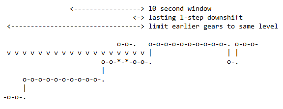
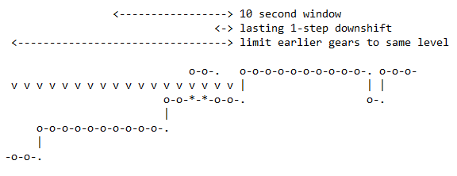

gearshift.core.model.calculateShiftpointsNdvFullPC.corrections package¶
Module contents¶
It provides the corrections defined in section 4 of the Sub-Annex 2 from Annex XXI from the COMMISSION REGULATION (EU) 2017/1151.
Docstrings should provide sufficient understanding for any individual function.
Sub-Modules:
-
appendCorrectionCells(CorrectionsCells, InitialGears, InitialGearsPrev, correctionType, correctionNbr)[source]¶ This function is just for debugging of gear corrections. It extends a cell array of gear correction strings by the current corrections and the resulting corrected gears. Each gear correction is indicated by a string combining correction type and number. If eg gear 2 is corrected to gear 3 by correction ‘4a’ during the first iteration then the gear correction string will be extended by ‘ 4a1 3’. If eg gear 2 is not corrected then the gear correction string will be extended by ‘ — 2’.
- Parameters
CorrectionsCells (numpy.array) – A cell array of gear correction strings BEFORE the current correction
InitialGears (numpy.array) – A cell array of gear numbers AFTER the current correction
InitialGearsPrev (numpy.array) – A cell array of gear numbers BEFORE the current correction
InitialGearsPrev – A cell array of gear numbers BEFORE the current correction
correctionType (String) – A string indicating the type of the current correction eg ‘4c’
correctionNbr (Integer) – A number indicating the iteration of the current correction
- Returns
- CorrectionsCells (
numpy.array): A cell array of gear correction strings AFTER the current correction. For example:
’4 — 4 4b1 2 — 2 — 2 — 2 — 2 — 2 — 2 — 2 — 2 — 2 — 2 — 2 — 2 — 2 — 2 — 2 — 2’
’4 — 4 4b1 3 — 3 — 3 — 3 — 3 — 3 — 3 — 3 — 3 — 3 — 3 — 3 — 3 — 3 — 3 — 3 — 3’
’5 — 5 4b1 4 — 4 — 4 — 4 — 4 — 4 — 4 4b2 3 — 3 — 3 — 3 — 3 — 3 — 3 — 3 — 3 — 3’
’5 — 5 — 5 4c1 4 — 4 — 4 — 4 — 4 — 4 — 4 — 4 — 4 — 4 — 4 4g2 3 — 3 — 3 — 3 — 3’
’5 — 5 — 5 4c1 4 — 4 — 4 — 4 — 4 — 4 — 4 — 4 — 4 — 4 — 4 4g2 3 — 3 — 3 — 3 — 3’
- CorrectionsCells (
- InitialGearsPrev (
numpy.array): A cell array of gear numbers AFTER current correction i.e. before next correction
- InitialGearsPrev (
-
applyCorrection4b(InitialGears, Corr4bToBeDoneAfterCorr4a, Corr4bToBeDoneAfterCorr4d, PhaseValues, PhaseStarts, PhaseEnds, PHASE_ACCELERATION_FROM_STANDSTILL, PHASE_ACCELERATION, NoOfGearsFinal)[source]¶ Sub-Annex 2 in section 4.(b) :
If a downshift is required during an acceleration phase or at the beginning of the acceleration phase the gear required during this downshift shall be noted (i_DS).
The starting point of a correction procedure is defined by either the last previous second when i_DS was identified or by the starting point of the acceleration phase, if all time samples before have gears > i_DS.
The highest gear of the time samples before the downshift determines the reference gear i_ref for the downshift. A downshift where i_DS = i_ref - 1 is referred to as a one step downshift, a downshift where i_DS = i_ref - 2 is referred to as a two step downshift, a downshift where i_DS = i_ref – 3 is referred to as a three step downshift.
Visualization of rules implemented:
initial gear sequence:


 


final gear sequence:

- Parameters
InitialGears (numpy.array) – A cell array of gear numbers AFTER the previous correction
Corr4bToBeDoneAfterCorr4a (bool) – Boolean that check if the correction 4b to be done after correction 4a
Corr4bToBeDoneAfterCorr4d (bool) – Boolean that check if the correction 4b to be done after correction 4d
PhaseValues (numpy.array) – Contains the points of changes phases
PhaseStarts (numpy.array) – Contains the points that are start point from a phase
PhaseEnds (numpy.array) – Contains the points that are end point from a phase
PHASE_ACCELERATION_FROM_STANDSTILL (int) – Acceleration phase following a standstill phase
PHASE_ACCELERATION (int) – Acceleration phase
NoOfGearsFinal (int) – The number of forward gears after apply the exclusion of first gear if is necessary.
- Returns
-
applyCorrection4a(InitialGears, Corr4bToBeDoneAfterCorr4a, PossibleGears, InAcceleration, InConstantSpeed, InAccelerationAnyDuration)[source]¶ Sub-Annex 2 in sectoin 4.(a)
If a one step higher gear (n+1) is required for only 1 second and the gears before and after are the same (n), or one of them is one step lower (n-1), gear (n+1) shall be corrected to gear n.
- Parameters
InitialGears (numpy.array) – A cell array of gear numbers AFTER the previous correction
Corr4bToBeDoneAfterCorr4a (bool) – Boolean that check if the correction 4b to be done after correction 4a
PossibleGears (numpy.array) – The possible gears calculated by each second
InAcceleration (boolean numpy.array) – Contains the points that are in acceleration phase as a True
InConstantSpeed (boolean numpy.array) – Contains the points that are in constant speed phase as a True
InAccelerationAnyDuration (boolean numpy.array) – some gear corrections ignore the duration of acceleration phases so save acceleration phases with any duration here
- Returns
- InitialGears (
numpy.array): A cell array of gear numbers AFTER the current correction
- InitialGears (
-
applyCorrection4c(InitialGears, PossibleGears)[source]¶ Sub-Annex 2 in section 4.(c)
If gear i is used for a time sequence of 1 to 5 seconds and the gear prior to this sequence is one step lower and the gear after this sequence is one or two steps lower than within this sequence or the gear prior to this sequence is two steps lower and the gear after this sequence is one step lower than within the sequence, the gear for the sequence shall be corrected to the maximum of the gears before and after the sequence. In all cases i-1 >= i_min shall be fulfilled.
Note
The corrected gear will be i-1 in all cases. 3.5. Determination of possible gears to be used. The lowest final possible gear is i_min.
- Parameters
InitialGears (numpy.array) – A cell array of gear numbers AFTER the previous correction
PossibleGears (numpy.array) – The possible gears calculated by each second
- Returns
- InitialGears (
numpy.array): A cell array of gear numbers AFTER the current correction
- InitialGears (
-
applyCorrection4d(InitialGears, PhaseStarts, PhaseEnds, PhaseValues, PHASE_DECELERATION, PHASE_DECELERATION_TO_STANDSTILL, corr_4d_applied_before, TraceTimesCount, NoOfGearsFinal, RequiredVehicleSpeeds)[source]¶ Regulation Annex 2, 4.(d) : No upshift to a higher gear shall be performed within a deceleration phase.
Note
The newest regulation ECE/TRANS/WP.29/GRPE/2019/2 moved the text part below to paragraph Annex 2, 4.(e). But we keep it here as it does not matter whether it will be executed at the end of 4.(d) or at the begin of 4.(e).
No upshift to a higher gear at the transition from an acceleration or constant speed phase to a deceleration phase shall be performed if one of the gears in the first two seconds following the end of the deceleration phase is lower than the upshifted gear or is gear 0. If there is an upshift during the transition and the initial deceleration phase by 2 gears, an upshift by 1 gear shall be performed instead. In this case, no further modifications shall be perfomed in the following gear use checks.
- Parameters
InitialGears (numpy.array) – A cell array of gear numbers AFTER the previous correction
PhaseStarts (numpy.array) – Contains the points that are start point from a phase
PhaseEnds (numpy.array) – Contains the points that are end point from a phase
PhaseValues (numpy.array) – Contains the points of changes phases
PHASE_DECELERATION (int) –
- time period of more than 2 seconds with required vehicle
speed >= 1km/h and monotonically decreasing
PHASE_DECELERATION_TO_STANDSTILL (int) – DECELERATION phase preceding a STANDSTILL phase
corr_4d_applied_before (boolean numpy.array) – Boolean array that check if correction 4d have been applied before as True
TraceTimesCount (int) – The length of trace times re-sampled in 1Hz
NoOfGearsFinal (int) – The number of forward gears after apply the exclusion of first gear if is necessary.
RequiredVehicleSpeeds (numpy.array) – The vehicle speed required for the whole cycle re-sampled in 1Hz
- Returns
- InitialGears (
numpy.array): A cell array of gear numbers AFTER the current correction
- InitialGears (
-
applyCorrection4e(InitialGears, PhaseStarts, PhaseEnds, PhaseValues, ClutchDisengaged, InitialRequiredEngineSpeeds, IdlingEngineSpeed, PHASE_DECELERATION, PHASE_DECELERATION_TO_STANDSTILL, Phases)[source]¶ Regulation Annex 2, 4.(e) :
Note
The newest regulation ECE/TRANS/WP.29/GRPE/2019/2 moved this gear correction to paragraph 3.3. Selection of possible gears with respect to engine speed. But we keep it here to check also additional usages of gear 2, which may result from other gear corrections done before.
During a deceleration phase, gears with n_gear > 2 shall be used as long as the engine speed does not drop below n_min_drive. Gear 2 shall be used during a deceleration phase within a short trip of the cycle (not at the end of a short trip)as long as the engine speed does not drop below (0.9 × n_idle). If the engine speed drops below n_idle, the clutch shall be disengaged. If the deceleration phase is the last part of a short trip shortly before a stop phase, the second gear shall be used as long as the engine speed does not drop below n_idle.
- Parameters
InitialGears (numpy.array) – A cell array of gear numbers AFTER the previous correction
PhaseStarts (numpy.array) – Contains the points that are start point from a phase
PhaseEnds (numpy.array) – Contains the points that are end point from a phase
PhaseValues (numpy.array) – Contains the points of changes phases
ClutchDisengaged (boolean numpy.array) – The clutch disengaged by each second.
InitialRequiredEngineSpeeds (numpy.array) – The initial engine speeds required for each gear i from 1 to ng and for each second j of the cycle trace.
IdlingEngineSpeed (float) – Annex 2 (2c) n_idle. The idling speed.
PHASE_DECELERATION (int) –
- time period of more than 2 seconds with required vehicle
speed >= 1km/h and monotonically decreasing
PHASE_DECELERATION_TO_STANDSTILL (int) – DECELERATION phase preceding a STANDSTILL phase
Phases (numpy.array) – The list of phases that are used during whole cycle
- Returns
- InitialGears (
numpy.array): A cell array of gear numbers AFTER the current correction
- InitialGears (
- ClutchDisengaged (
boolean numpy.array): The clutch disengaged by each second AFTER the current correction
- ClutchDisengaged (
-
applyCorrection4f(InitialGears, ClutchDisengaged, SuppressGear0DuringDownshifts, PossibleGears, InStandStill, InDecelerationToStandstill, InDeceleration)[source]¶ Sub-Annex 2 in section 4.(f)
If during a deceleration phase the duration of a gear sequence between two gear sequences of 3 seconds or more is only 1 second, it shall be replaced by gear 0 and the clutch shall be disengaged.
- Parameters
InitialGears (numpy.array) – A cell array of gear numbers AFTER the previous correction
ClutchDisengaged (boolean numpy.array) – The clutch disengaged by each second.
SuppressGear0DuringDownshifts (bool) – Sub-Annex 2 (4f).If a gear is used for only 1 second during a deceleration phase it shall be replaced by gear 0 with clutch disengaged, in order to avoid too high engine speeds. But if this is not an issue, the manufacturer may allow to use the lower gear of the following second directly instead of gear 0 for downshifts of up to 3 steps.
PossibleGears (numpy.array) – The possible gears calculated by each second
InStandStill (boolean numpy.array) – Contains the points that are in standstill phase as a True
InDecelerationToStandstill (boolean numpy.array) – The array that contains the seconds from deceleration to standstill as a True
InDeceleration (boolean array) – Contains the points that are in deceleration phase as a True
- Returns
- InitialGears (
numpy.array): A cell array of gear numbers AFTER the current correction
- InitialGears (
- ClutchDisengaged (
boolean numpy.array): The clutch disengaged by each second AFTER the current correction
- ClutchDisengaged (